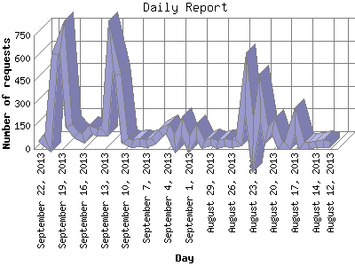

The Daily Report identifies the activity for each day within the reporting period. Remember that one page hit can result in several server requests as the images for each page are loaded.

| Day | Number of requests | Number of page requests | |
|---|---|---|---|
| 1. | August 12, 2013 | 30 | 27 |
| 2. | August 13, 2013 | 36 | 32 |
| 3. | August 14, 2013 | 30 | 30 |
| 4. | August 15, 2013 | 23 | 21 |
| 5. | August 16, 2013 | 23 | 20 |
| 6. | August 17, 2013 | 188 | 21 |
| 7. | August 18, 2013 | 21 | 20 |
| 8. | August 19, 2013 | 24 | 21 |
| 9. | August 20, 2013 | 154 | 15 |
| 10. | August 21, 2013 | 89 | 16 |
| 11. | August 22, 2013 | 339 | 18 |
| 12. | August 23, 2013 | 24 | 22 |
| 13. | August 24, 2013 | 433 | 33 |
| 14. | August 25, 2013 | 40 | 31 |
| 15. | August 26, 2013 | 35 | 31 |
| 16. | August 27, 2013 | 41 | 29 |
| 17. | August 28, 2013 | 27 | 25 |
| 18. | August 29, 2013 | 45 | 34 |
| 19. | August 30, 2013 | 32 | 31 |
| 20. | August 31, 2013 | 115 | 29 |
| 21. | September 1, 2013 | 27 | 26 |
| 22. | September 2, 2013 | 153 | 29 |
| 23. | September 3, 2013 | 37 | 27 |
| 24. | September 4, 2013 | 137 | 36 |
| 25. | September 5, 2013 | 107 | 31 |
| 26. | September 6, 2013 | 55 | 36 |
| 27. | September 7, 2013 | 35 | 31 |
| 28. | September 8, 2013 | 41 | 30 |
| 29. | September 9, 2013 | 36 | 29 |
| 30. | September 10, 2013 | 50 | 28 |
| 31. | September 11, 2013 | 494 | 39 |
| 32. | September 12, 2013 | 690 | 31 |
| 33. | September 13, 2013 | 110 | 32 |
| 34. | September 14, 2013 | 112 | 29 |
| 35. | September 15, 2013 | 129 | 31 |
| 36. | September 16, 2013 | 73 | 22 |
| 37. | September 17, 2013 | 91 | 29 |
| 38. | September 18, 2013 | 151 | 36 |
| 39. | September 19, 2013 | 743 | 43 |
| 40. | September 20, 2013 | 625 | 46 |
| 41. | September 21, 2013 | 28 | 28 |
| 42. | September 22, 2013 | 69 | 31 |
Most active day March 27, 2013 : 196 pages sent. 743 requests handled.
Daily average: 28 pages sent. 136 requests handled.
This report was generated on September 22, 2013 23:44.
Report time frame January 13, 2013 05:03 to September 22, 2013 23:03.
| Web statistics report produced by: analog 5.1 / Report Magic 2.21 |